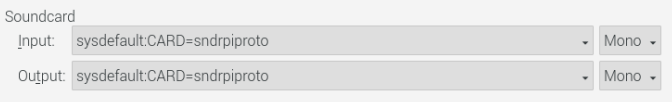
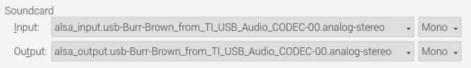

|
<< Click to Display Table of Contents >> Navigation: Other Programs > WSJT-X |
WSJT-X is a computer program used by amateur radio operators for weak signal communication. It is designed to facilitate communication on specific amateur radio bands using digital modes, particularly for contacts that are difficult or impossible to establish with traditional voice or Morse code transmissions.
WSJT-X was developed by Dr. Joe Taylor, K1JT, and a team of contributors. It stands for "Weak Signal Communication, by K1JT" and is named after its creator. The software incorporates several digital communication modes optimized for weak signal propagation, such as JT65, JT9, FT8, and FT4. These modes use highly efficient encoding and decoding techniques to allow for reliable communication even under challenging radio propagation conditions.
The primary use of WSJT-X is in the field of amateur radio, where it enables operators to make contacts over long distances with low power and inefficient antennas. The software uses a time-synchronized protocol, allowing for accurate time and frequency calibration, and it includes features like automatic logging, signal reporting, and advanced error correction algorithms.
WSJT-X has gained popularity among amateur radio operators worldwide due to its effectiveness in weak signal communication, making it possible to establish contacts that would otherwise be difficult or impossible. It has become an essential tool for those interested in DXing (making long-distance contacts) and conducting scientific experiments related to radio propagation and space weather.
Detailed instructions are beyond the scope of this manual, please refer to the WSJT-X web site:
This Help topic covers use of WSJT-X in RSS.
Radio Connection
RSS and WSJT-X both use the Hamlib radio control library. Using the Hamlib "Net rigctl" radio selection in WSJT-X it is possible to have both RSS and WSJT-X control the radio.
Connect RSS to your radio in SETTINGS>Radio. Go to WSJT-X File>Settings>Radio. Select Hamlib NET rigctl for Rig and localhost:<RSS Port> for Network Server. You can now control frequency from WSJT-X or RSS.
The RSS port is determined by the account you wish to use in RSS. Use the port number shown in RSS SETTINGS>Radio>Rigctl Port.
If your radio requires PTT control on an ACC connector to switch audio routing, use the H/W PTT Hamlib GPIO option in Advanced Radio settings.
Logbook Connection
Contacts logged in WSJT-X are automatically transferred to the active log in RSS for the account specified by the sync option in RSS SETTINGS>Users>Edit>Sync WSJTX Log. Log data are transferred using the Secondary UDP Server options in WSJT-X.
RSS expects a connection on N1MM Server port 2333
Make sure the three following settings are set on WSJT-X Settings Reporting tab are set:
File>Settings>Reporting. Bottom of page.
1.Enable logged contact ADIF broadcast is checked
2.Server name or IP address = 127.0.0.1
3.Server port number = 2333
Audio Connection
RigPi Audio or a radio CODEC is used for input and output audio for WSJT-X. Since Audio is limited to one application at a time, make sure the Mumble VoIP client program isn't running.. Select your sound source in the Input and Output drop-down lists in WSJT-X File>Settings>Audio>Soundcard.

If your radio has internal CODECS, use these settings (may vary depending on your radio):
